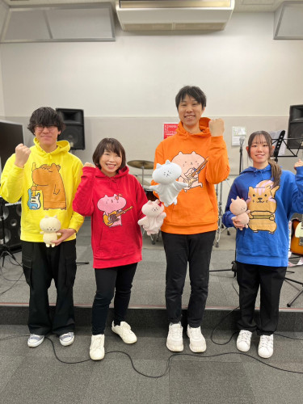

※メニューは一番上の三本線をクリックするか、一番下にあります☆(スマートフォンなど)
ねこつきとアンバランスでも頑張るにゃんこくんと仲間たちとの憩いの場に遊びに来てくださり、ありがとうございます＊＊＊
ねこつきBANDの音楽情報や、にゃんこくんたちの日記、動画、グッズなどの、最新情報をお届けします！！
どうぞよろしくお願いします☆☆☆ 
★新曲サブスク配信スタート！！
「立ち上がってまた頑張るにゃん」
元気が出る一曲できました＊＊＊
ぜひ聴いてみてくださいね(*´꒳`*)
https://youtu.be/gs3Ot4kf_q8?si=rx7qJ1i6q5XkjeEY
【カラオケも配信中】
◉立ち上がってまた頑張るにゃん
◉逢えない夜
◉ペペロンチーノ大讃歌
◉春風
◉止まないでどしゃ降り
◉未来に向かって
◉アブラカタブラ
◉fixed mind
◉ひなたぼっこ
◉To you
◉アンバランスでも頑張るにゃん
◉未来に向かって
◉さくら並木
◉星空
◉あなたは優しかった
◉ファンファーレ
【カラオケJOYSOUND】で歌える！
JOYSOUND直営店で使えるクーポンもプレゼント♫
▼クーポンはこちら
https://social.kicks.video/v1/re/kr/79629/joysound_coupon?utm_source=vk&utm_medium=sw&utm_campaign=share&utm_term=79629
【今後のスケジュール】
◉2026/10/10（土）
『BAY WALK MARKET 2026 秋』
みなとみらいM＆W(入場無料)
16:00〜17:30 ねこつきBAND 出演
◉2026/10/11（日）
『えきにしふりま』
箱根ヶ崎駅西口公用地(入場無料)
10:00〜15:00
※詳細決まり次第up予定☆
ねこつきBANDは一日を通して楽しみますので、一緒にワイワイしてくださいね♪♪
ぜひ会いに来てください＊＊＊
一緒に楽しい時間を過ごせたらうれしいです♪♪ (=´∀｀)人(´∀｀=)
◉ねこつきのYouTube↓
https://youtube.com/channel/UCapjjSCBQGVzrBgca4Vbw0Q?si=rgs6Ye7R2LS7GB0g
チャンネル登録者3333人を突破☆
一緒に楽しんでくださり、本当にありがとうございます！！
土曜日(たまに日曜日)はスタジオ生LIVEを放送したり、ねこつきBANDの井戸端会議をしたり、ゲーム放送をします☆日時は不定期ですみません！！
たまたまお時間が合えば、ぜひ観てコメント残していただけると嬉しいです♪♪
◎不定期ですが、ねこつきBAND動画もちょこちょこ公開できたら良いなと思ってます！！
ねこつきチャンネル(YouTube)↓
https://youtube.com/channel/UCapjjSCBQGVzrBgca4Vbw0Q?si=rgs6Ye7R2LS7GB0g
これからも音楽にアニメにバンド活動に、ワクワクする作品を作って行きますので、この機会にぜひYouTubeのチャンネル登録して、楽しんでいただけたら嬉しいです＊＊＊
- 2026-03-29『MIZCUL発表会』☆出演
- 2026-03-28みなとみらいさくらフェスタ2026☆出演
- 2026-03-16かわさきエフエム☆出演
- 2026-02-08えきにしふりま@雪で中止になってしまいました。。。
- 2026-01-25ミュージックアレアレア☆出演